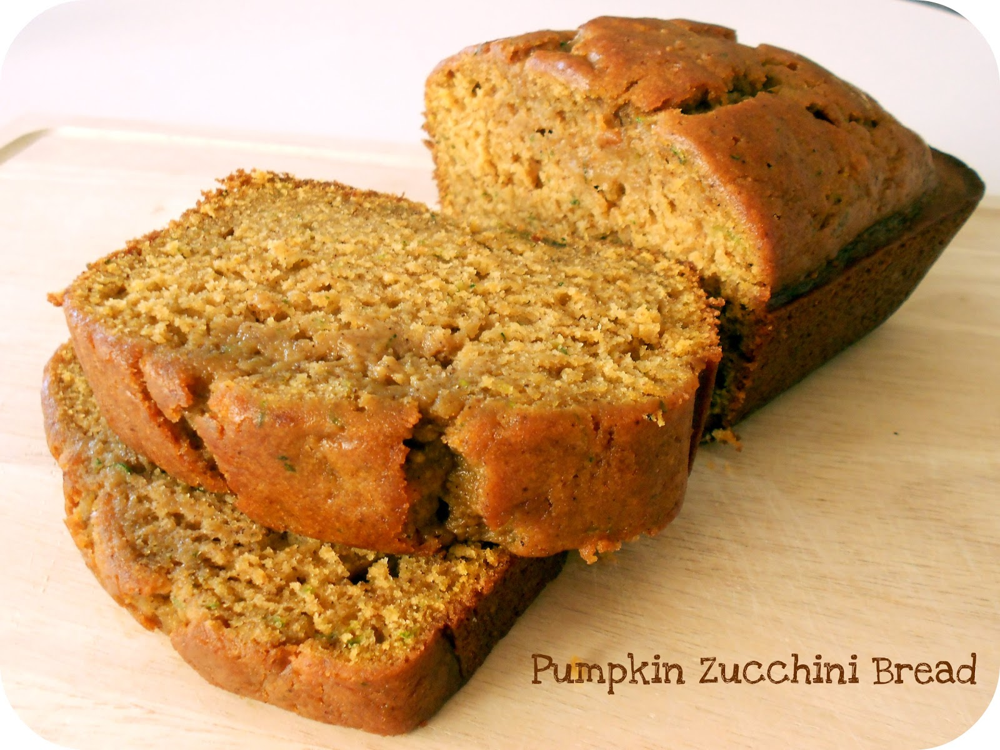

Pumpkin Zucchini Bread

Sections
About meal
This is a simple tasty meal. It is meant to serve 12.
Takes 20 minutes to prep and get everything ready.
As well as takes 40 minutes to cook and a additional 30 mins to cool.
Nutrition per serving
| Calories | 435 |
|---|---|
| Protein | 6.g |
| Carbohydrates | 65.1g |
| Fat | 17.2g |
| Cholesterol | 46.5mg |
| Sodium | 360.9mg |
Ingredients needed
- 3 cups all-purpose flour
- 1 ½ tablespoons pumpkin pie spice
- 1 teaspoon salt
- 1 teaspoon baking soda
- 1 teaspoon baking powder
- 3 eggs
- 2 ¼ cups white sugar
- ½ cup vegetable oil
- ½ cup canned pumpkin
- 1 tablespoon vanilla extract
- 2 ½ cups grated zucchini
- 1 cup chopped walnuts (Optional)
Directions
- Preheat oven to 325 degrees F (165 degrees C).
Grease and flour 2 8x8-inch baking dishes. - Sift flour, pumpkin pie spice, salt, baking soda,
and baking powder together in a large bowl. - Beat eggs, sugar, vegetable oil, pumpkin, and
vanilla extract together in a second bowl until
mixture is smooth and creamy. Stir wet ingredients
into flour mixture until combined; gently fold in
zucchini and walnuts. Divide batter into the
prepared baking dishes. - Lasty just plate the meal however you like with
any drink and sides you want and enjoy the meal.